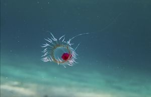
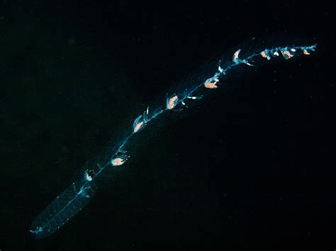
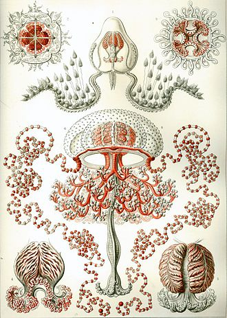
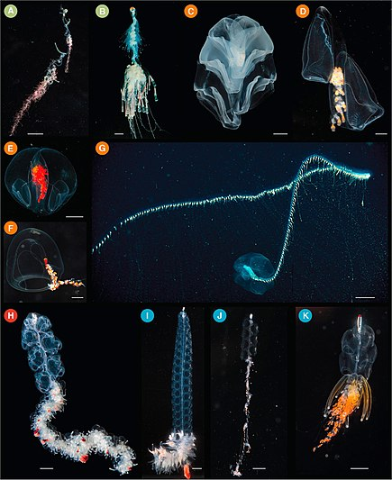

Some of the most fascinating and inspiring Cnidarians reside as members of the class Hydrozoa, not least of which are the Siphonophores; Colonial organisms like the Portuguese Man o' War that, although they appear to be comprised of a single organism, are really comprised of a host of separate organisms all with their own seperate functions and responsabilities. That's what Cnidarians call teamwork!
Another fascinating member of the Hydrozoan class is "Turritopsis Dohrnii" (pictured below), and organism that is capable of reverting to a sexually immature version of itself in effect making it capable of living eternally.
Hydrozoa includes nearly 3,200 species; most are marine, although some freshwater species are known (see the figure below). Animals in this class are polymorphs, and most exhibit both polypoid and medusoid forms in their lifecycle, although this is variable. The polyp form in these animals often shows a cylindrical morphology with a central gastrovascular cavity lined by the gastrodermis. The gastrodermis and epidermis have a simple layer of mesoglea sandwiched between them. A mouth opening, surrounded by tentacles, is present at the oral end of the animal. Many hydrozoans form colonies that are composed of a branched colony of specialized polyps that share a gastrovascular cavity, such as in the colonial hydroid Obelia. Colonies may also be free-floating and contain medusoid and polypoid individuals in the colony as in Physalia (the Portuguese Man O’ War) or Velella (By-the-wind sailor). Even other species are solitary polyps (Hydra) or solitary medusae (Gonionemus). The true characteristic shared by all of these diverse species is that their gonads for sexual reproduction are derived from epidermal tissue, whereas in all other cnidarians they are derived from gastrodermal tissue.
Orders
Orders
General information:
Hydrozoa
Hydrozoa is a class within the phylum Cnidaria, which includes sea anemones, corals, and jellyfish. The vast majority are marine species, but freshwater hydrozoans are known, for example, Cordylophora lacustris and Craspedacusta sowerbyi. Two main body forms exist in hydrozoans: a polypoid structure which is sessile, remaining in the same place, and a medusoid form which is free-swimming. The polyp consists of a stalklike structure that bears a number of tentacles surrounding a mouth. The medusa
KEY TERMSis a bell-like structure, with the tentacles surrounding the mouth underneath. Some species are solitary, but the majority is colonial. In the latter, the colony arises from a single basal root, which rests on the substrate and from which individual polyps arise. Both colonial and individual species lack a hard outer skeleton. A special feature among colonial species is the presence of individual polyps that perform separate roles. Some polyps are, for example, specialized for feeding (gastrozooids), while others are responsible for reproduction (gonozooids) or defense. While most colonial sessile species are small and feed by filtering zooplankton from the surrounding water currents, some of the medusoid forms are quite large and capable of feeding on small fish. Floating pelagic species such as Porpita and Velella, or the by-the-wind-sailor, as it is commonly known, resemble small jellyfish and may reach 1.5-2.5 in (4-6 cm) in diameter. These are colonial species made up of large numbers of gastrozooids and gonozooids; the body is modified into a flattened structure with a float on the upper surface to provide buoyancy. Some species, such as Velella have an additional small “sail” on the upper surface to catch the wind and assist further with dispersal.
Subclass Hydroidolina:
Hydroidolina is a subclass of hydrozoans in the phylum Cnidaria. It contains the bulk of the paraphyletic "Hydroida" which were one of the main groupings of the class Hydrozoa in older classifications and were placed at order rank. Hydroidolina also includes, however, the highly advanced colonial jellies of Siphonophora, which were not included in the "Hydroida".
Siphonophores are in the class Hydrozoa. Siphonophores are colonial hydrozoans that do not exhibit alternation of generations, but instead reproduce asexually through a budding process. Zooids are the multicellular units that build the colonies. A single bud called the pro-bud initiates the growth of a colony by undergoing fission. Each zooid is produced to be genetically identical; however, mutations can alter their functions and increase diversity of the zooids within the colony. Siphonophores are unique in that the pro-bud initiates the production of diverse zooids with specific functions. The functions and organizations of the zooids in colonies widely vary among the different species; however, the majority of colonies are bilaterally arranged with dorsal and ventral sides to the stem. The stem is the vertical branch in the center of the colony to which the zooids attach. Zooids typically have special functions, and thus assume specific spatial patterns along the stem.
Anthoathecata, or the athecate hydroids, are an order of hydrozoans belonging to the phylum Cnidaria. A profusion of alternate scientific names exists for this long-known, heavily discussed, and spectacular group. It has also been called Gymnoblastea and (with or without an emended ending -ae), Anthomedusa, Athecata, Hydromedusa, and Stylasterina. There are about 1,200 species worldwide.
These hydrozoans always have a polyp stage. Their hydranths grow either solitary or in colonies. There is no firm perisarc around the polyp body. The medusae, or jellyfish, are solitary animals, with tentacles arising from the bell margin, lacking statocysts but possessing radial canals. Their gonads are on the manubrium ("handle").
Except in Eudendriidae and Laingiidae, prey can be captured by discharging harpoon-like structures (desmonemes) from chambers (cnidae) in specialized cells (nematocysts) on the tentacles. In hydrozoans, these are nearly always adhesive and entrapping, rather than puncturing and poisoned as in other jellys.

Subclass Trachylinae:
Trachylinae (also Trachylina, Trachylinida, etc.) is a subclass of hydrozoans. It is placed at order rank in many older classifications, and limited to contain the Narcomedusae and Trachymedusae. But the Actinulidae, then considered an independent order, and probably also the Limnomedusae which were traditionally placed in the paraphyletic "Hydroida", belong to this group too. It is not entirely clear whether the Limnomedusae and the Trachymedusae as conventionally circumscribed are monophyletic
The freshwater jelly Craspedacusta sowerbyi is a well-known member of the Limnomedusae and might thus belong here.
Order Actinulidae:
Actinulida are an order of hydrozoans in the subclass Trachylinae. Very small, medusoid Hydrozoa without polyp phase, living in the sand interstitial, solitary, bell entirely or very much reduced, epidermis ciliated, 1-2 whorls of tentacles, statocysts present or not, club shaped and derived of ecto- and entodermal tissue; cnidome may include stenoteles.
The members of of order Siphonophorae are actually members of the subclass Hydroidolina of class hydrozoa.
Although a siphonophore may appear to be an individual organism, each specimen is in fact a colonial organism composed of medusoid and polypoid zooids that are morphologically and functionally specialized. Zooids are multicellular units that develop from a single fertilized egg and combine to create functional colonies able to reproduce, digest, float, maintain body positioning, and use jet propulsion to move. Most colonies are long, thin, transparent floaters living in the pelagic zone. Like other hydrozoans, some siphonophores emit light to attract and attack prey. While many sea animals produce blue and green bioluminescence, a siphonophore was only the second life form found to produce a red light (the first one being the scaleless dragonfish Chirostomias pliopterus)
